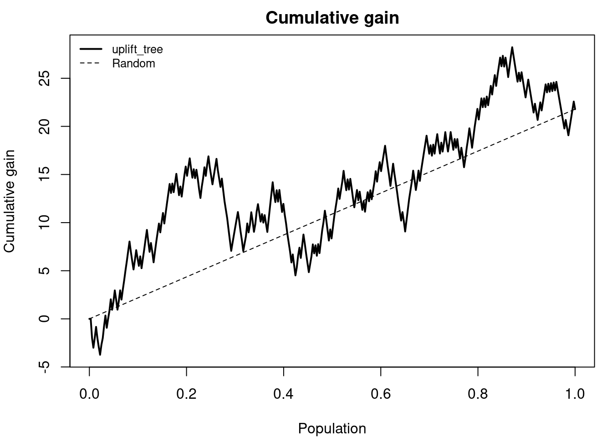
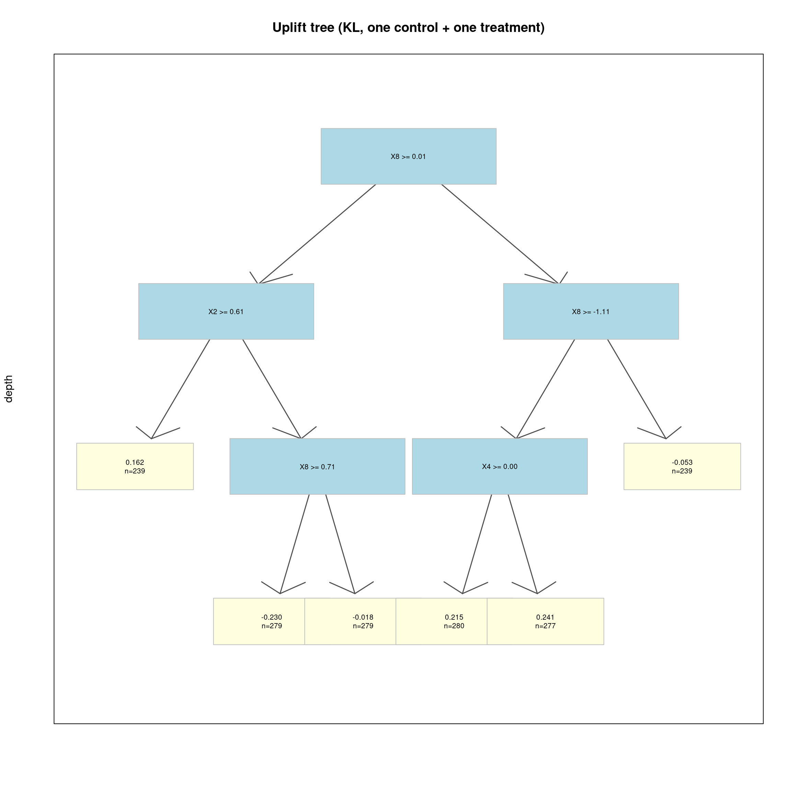
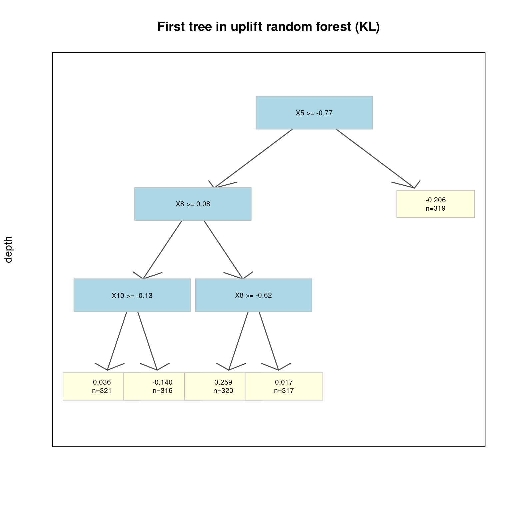
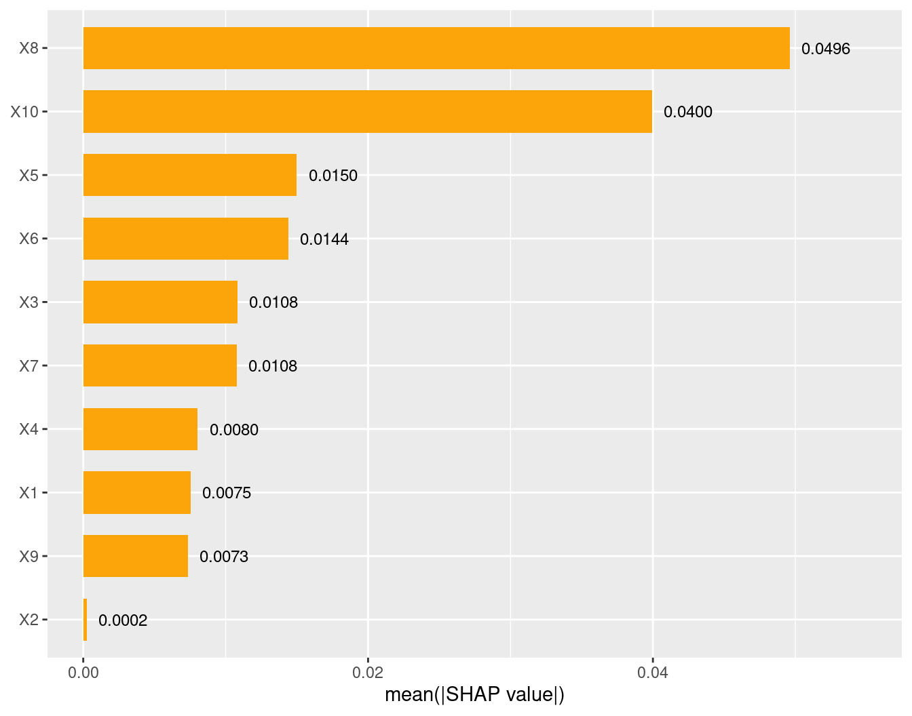
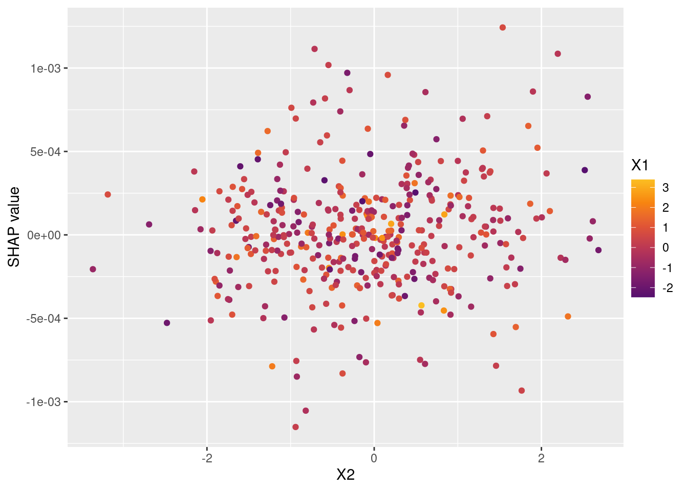

Code
packages <- c(
"tidyverse",
"RCausalML",
"rpart.plot",
"kernelshap",
"shapviz"
)In this notebook, we use synthetic data set to demonstrate the use of the tree-based algorithms in classification example. It mirrors the Uplift Trees Example with Synthetic Data from the Python CausalML docs.
Uplift trees estimate the causal effect of a treatment on an individual — not whether an outcome is likely, but whether a specific action caused it. Where a standard predictive model asks “who will convert?”, an uplift model asks: “who will convert because of the intervention?”
The estimand is the Conditional Average Treatment Effect:
\[\tau(x) = P(Y = 1 \mid T = 1, X = x) - P(Y = 1 \mid T = 0, X = x)\]
where \(T = 1\) denotes treatment, \(T = 0\) control, \(Y\) a binary outcome, and \(x\) the individual’s covariate vector.
Individuals fall into four behavioral segments based on their potential outcomes:
| Buys if treated | Does not buy if treated | |
|---|---|---|
| Buys if untreated | Sure Things | Lost Causes |
| Does not buy if untreated | Persuadables | Do-Not-Disturbs |
Standard predictive models conflate Sure Things and Persuadables. Uplift trees separate them by targeting \(\tau(x)\) directly.
At each node, the algorithm finds the split that maximizes treatment effect divergence across child nodes. The general gain formula is:
\[\text{gain} = \frac{n_\ell}{n}\, D(p^\ell, q^\ell) + \frac{n_r}{n}\, D(p^r, q^r) - D(p, q)\]
where \(p = P(Y \mid T=1)\), \(q = P(Y \mid T=0)\), and \(D(\cdot,\cdot)\) is a divergence measure. Three divergence criteria are supported:
| Criterion | Formula | Key Property |
|---|---|---|
| KL Divergence | \(\sum_y p(y)\log\frac{p(y)}{q(y)}\) | Asymmetric; sensitive to large shifts |
| Euclidean Distance | \(\sum_y (p(y)-q(y))^2\) | Symmetric; uniform sensitivity |
| Chi-Square | \(\sum_y \frac{(p(y)-q(y))^2}{q(y)}\) | Upweights low-baseline deviations |
For multi-arm settings, Contextual Treatment Selection (CTS; Zhao et al., 2017) replaces divergence maximization with a reward-based criterion that scores each split by the gain in expected outcome under optimal arm assignment:
\[\hat{\Delta}_\mu(s) = \hat{p}(\phi_\ell \mid \phi)\max_t \hat{\mu}_t(\phi_\ell) + \hat{p}(\phi_r \mid \phi)\max_t \hat{\mu}_t(\phi_r) - \max_t \hat{\mu}_t(\phi)\]
Three adjustments stabilize splits and reduce bias:
Consider an online marketing campaign with a binary conversion outcome. A randomized experiment assigns users to receive a promotional email (treatment) or nothing (control). The overall average uplift is positive but modest. An uplift model ranks users by estimated \(\hat{\tau}(x_i)\), and the top segment shows:
This means 15 out of every 100 targeted users convert because of the email; the remaining 25 converters would have purchased regardless. A standard propensity model cannot make this distinction — it ranks high-baseline Sure Things alongside true Persuadables, misallocating campaign budget. The uplift model also flags Do-Not-Disturbs — users for whom treatment suppresses conversion — and excludes them from targeting automatically.
In this section, we will use the RCausalML package to fit an uplift random forest model. The uplift_rf_multi() function allows us to handle multiple treatment groups and estimate the uplift for each group compared to a control group. We will then use the fitted model to predict the uplift on a test set and evaluate the results. We also use kernel SHAP (kernelshap, shapviz) to explain heterogeneity in predicted uplift (CATE), following the same pattern as the causal survival forest notebook. This example closely follows the structure of the Python {CausalML} documentation on uplift trees with synthetic data.
Following R packages are required to run this notebook. If any of these packages are not installed, you can install them using the code below:
tidyverse, RCausalML, rpart.plot, kernelshap, shapviz
packages <- c(
"tidyverse",
"RCausalML",
"rpart.plot",
"kernelshap",
"shapviz"
)# Install missing packages
# new_packages <- packages[!(packages %in% installed.packages()[, "Package"])]
# if (length(new_packages)) install.packages(new_packages)# Load packages with suppressed messages
invisible(lapply(packages, function(pkg) {
suppressPackageStartupMessages(library(pkg, character.only = TRUE))
}))# Check loaded packages
cat("Successfully loaded packages:\n")Successfully loaded packages: [1] "package:shapviz" "package:kernelshap" "package:rpart.plot"
[4] "package:rpart" "package:RCausalML" "package:lubridate"
[7] "package:forcats" "package:stringr" "package:dplyr"
[10] "package:purrr" "package:readr" "package:tidyr"
[13] "package:tibble" "package:ggplot2" "package:tidyverse"
[16] "package:stats" "package:graphics" "package:grDevices"
[19] "package:utils" "package:datasets" "package:methods"
[22] "package:base" We use simulated data from synthetic_data() (see R/synthetic_data.R) to illustrate fitting a causal tree, estimating treatment effects on a test set, and visualizing results. The data has a known heterogeneous treatment effect structure, which is useful for validation.
The CausalML package contains various functions to generate synthetic datasets for uplift modeling. Here we generate a classification dataset using the make_uplift_classification() function.
# Python: df, x_names = make_uplift_classification(). R uses same structure with explicit params for 4 groups.
out <- make_uplift_classification(
treatment_name = c("control", "treatment1", "treatment2", "treatment3"),
y_name = "conversion",
n_samples = 4000,
n_classification_features = 10,
n_classification_informative = 5,
n_uplift_increase_dict = list(treatment1 = 5, treatment2 = 5, treatment3 = 5),
n_uplift_decrease_dict = list(treatment1 = 3, treatment2 = 3, treatment3 = 3),
delta_uplift_increase_dict = list(treatment1 = 0.1, treatment2 = 0.15, treatment3 = 0.2),
delta_uplift_decrease_dict = list(treatment1 = -0.1, treatment2 = -0.1, treatment3 = -0.1),
random_seed = 111
)
df <- out$data
x_names <- out$X_nameshead(df, 5)Look at the conversion rate and sample size in each group:
# Conversion rate and sample size by treatment group (Python: pivot_table values='conversion', aggfunc=[np.mean, np.size], margins=True)
agg <- aggregate(conversion ~ treatment_group_key, data = df,
FUN = function(z) c(mean = mean(z), size = length(z)))
agg <- do.call(data.frame, agg)
names(agg) <- c("treatment_group_key", "mean", "size")
agg <- rbind(agg, data.frame(treatment_group_key = "All", mean = mean(df$conversion), size = nrow(df)))
print(agg) treatment_group_key mean size
1 control 0.4936087 1017
2 treatment1 0.4933333 975
3 treatment2 0.4671246 1019
4 treatment3 0.5278059 989
5 All 0.4952500 4000In this section, we first fit the uplift tree classifier using training data. We then use the fitted model to make a prediction using testing data. The prediction returns an array in which each column contains the predicted uplift if the unit was in the corresponding treatment group (or with full_output=TRUE, control and treatment probabilities plus recommended treatment and deltas, as in Python).
Python uses UpliftTreeClassifier(control_name='control') on the full multi-treatment data; predict returns a DataFrame with columns = classes_ (control, treatment1, treatment2, treatment3). In R we use uplift_rf_multi with n_trees = 1 to get one tree per treatment arm and the same output structure.
# Python: clf = UpliftTreeClassifier(control_name='control'); clf.fit(...); p = clf.predict(...)
clf <- uplift_rf_multi(
as.matrix(df_train[, x_names]),
df_train$treatment_group_key,
df_train$conversion,
control_name = "control",
n_trees = 1,
min_node_size = 100,
max_depth = 4
)
p <- predict(clf, as.matrix(df_test[, x_names]), full_output = TRUE)
# DataFrame with columns = control, treatment1, treatment2, treatment3 (like Python clf.classes_)
df_res_tree <- p[, c("control", clf$treatment_names), drop = FALSE]
head(df_res_tree, 5)In R we use uplift_rf_multi with n_trees = >1 to get multiple trees per treatment arm and the same output structure.
# Python: uplift_model = UpliftRandomForestClassifier(control_name='control')
uplift_model <- uplift_rf_multi(
as.matrix(df_train[, x_names]),
df_train$treatment_group_key,
df_train$conversion,
control_name = "control",
n_trees = 10,
min_node_size = 50,
max_depth = 4
)
X_test <- as.matrix(df_test[, x_names])
# full_output=TRUE: control, treatment1, treatment2, treatment3, recommended_treatment, delta_*, max_delta
df_res <- predict(uplift_model, X_test, full_output = TRUE)
cat("Shape:", nrow(df_res), "x", ncol(df_res), "\n")Shape: 800 x 9 head(df_res)[1] 800 3head(y_pred) treatment2 treatment1 treatment3
[1,] -0.016683943 0.11391280 -0.049912598
[2,] -0.043576225 -0.01682676 -0.035673280
[3,] -0.018251785 -0.07476695 -0.003257867
[4,] -0.002012745 0.05041843 -0.011603887
[5,] -0.006926998 -0.12990494 0.049656996
[6,] -0.055923640 0.13821900 0.084906086# Python: result = pd.DataFrame(y_pred, columns=uplift_model.classes_[1:])
# Put the predictions in a DataFrame; columns = treatment names (excluding control)
result <- as.data.frame(y_pred)
names(result) <- uplift_model$treatment_names
head(result)The performance of the model can be evaluated with the help of the uplift curve.
The uplift curve is calculated on a synthetic population that consists of those that were in the control group and those who happened to be in the treatment group recommended by the model. We use the synthetic population to calculate the actual treatment effect within predicted treatment effect quantiles. Because the data is randomized, we have a roughly equal number of treatment and control observations in the predicted quantiles and there is no self selection to treatment groups.
# If all deltas are negative, assign to control; otherwise assign to the treatment
# with the highest delta
uplift_cols <- uplift_model$treatment_names
best_treatment <- ifelse(
apply(result[uplift_cols], 1, function(r) all(r < 0)),
"control",
uplift_cols[apply(result[uplift_cols], 1, which.max)]
)
# Create indicator variables for whether a unit happened to have the
# recommended treatment or was in the control group
actual_is_best <- as.integer(df_test$treatment_group_key == best_treatment)
actual_is_control <- as.integer(df_test$treatment_group_key == "control")synthetic <- (actual_is_best == 1) | (actual_is_control == 1)
synth <- result[synthetic, , drop = FALSE]We use the observed treatment effect to calculate the uplift curve, which answers the question: how much of the total cumulative uplift could we have captured by targeting a subset of the population sorted according to the predicted uplift, from highest to lowest?
CausalML has the plot_gain() function which calculates the uplift curve given a DataFrame containing the treatment assignment, observed outcome and the predicted treatment effect.
# synth.assign(is_treated=..., conversion=..., uplift_tree=synth.max(axis=1)).drop(columns=...)
auuc_metrics <- synth
auuc_metrics$is_treated <- 1 - actual_is_control[synthetic]
auuc_metrics$conversion <- df_test$conversion[synthetic]
auuc_metrics$uplift_tree <- apply(synth, 1, max)
auuc_metrics <- auuc_metrics[, c("is_treated", "conversion", "uplift_tree")]
head(auuc_metrics)plot_gain(auuc_metrics, outcome_col = "conversion", treatment_col = "is_treated")
The sections below follow the one-control/one-treatment setup from the Python uplift tree visualization example. We restrict df to control and treatment1, then split into training and test matrices (column names are required for SHAP).
set.seed(111)
df_bin <- df[df$treatment_group_key %in% c("control", "treatment1"), ]
df_bin$w_bin <- as.integer(df_bin$treatment_group_key != "control")
X_all <- as.matrix(df_bin[, x_names])
colnames(X_all) <- x_names
y_all <- df_bin$conversion
w_all <- df_bin$w_bin
idx_bin <- sample(nrow(X_all), size = floor(0.8 * nrow(X_all)))
X_train <- X_all[idx_bin, , drop = FALSE]
y_train <- y_all[idx_bin]
w_train <- w_all[idx_bin]
X_test <- X_all[-idx_bin, , drop = FALSE]
y_test <- y_all[-idx_bin]
w_test <- w_all[-idx_bin]
X <- X_all
y <- y_all
w <- w_alluplift_model_bin <- uplift_rf_kl(
X_train, w_train, y_train,
n_trees = 1,
min_node_size = 200,
min_samples_treatment = 50,
max_depth = 4,
n_reg = 100
)
uplift_tree_fitted <- uplift_model_bin$trees[[1]]
x_names_fit <- uplift_model_bin$X_names
cat(uplift_tree_string(uplift_tree_fitted, x_names_fit))X8 >= 0.0125?
yes -> X2 >= 0.6122?
yes -> [tau=0.1618, n=239]
no -> X8 >= 0.7081?
yes -> [tau=-0.2303, n=279]
no -> [tau=-0.0181, n=279]
no -> X8 >= -1.1106?
yes -> X4 >= 0.0044?
yes -> [tau=0.2153, n=280]
no -> [tau=0.2409, n=277]
no -> [tau=-0.0525, n=239]feature_k >= value).tau in R).[tau=..., n=...].uplift_model.fill(X=df_test, ...) updates node statistics; in R we compare mean predicted CATE on train vs test (see next subsection).Edges are drawn with arrows from each split to its children (aligned with Python CausalML’s graphviz style).
uplift_tree_plot(uplift_tree_fitted, x_names_fit, main = "Uplift tree (KL, one control + one treatment)")
Optional: use rpart.plot for a different layout:
# If rpart and rpart.plot are installed:
# uplift_tree_plot(uplift_tree_fitted, x_names_fit, main = "Uplift tree (rpart.plot)", use_rpart_plot = TRUE)In the Python notebook, the trained tree is filled with the testing dataset so that the validation uplift score appears in the tree nodes. In R there is no fill() method; we evaluate the same model on the test set and compare mean predicted CATE to check consistency (e.g. overfitting).
Train an uplift random forest, then visualize one tree (e.g. the first, index 0 in Python / trees[[1]] in R). Python: UpliftRandomForestClassifier(n_estimators=5, max_depth=5, min_samples_leaf=200, min_samples_treatment=50, n_reg=100, evaluationFunction='KL', control_name='control').
uplift_rf <- uplift_rf_kl(
X_train, w_train, y_train,
n_trees = 5,
min_node_size = 200,
min_samples_treatment = 50,
max_depth = 5,
n_reg = 100
)Specify a tree in the random forest (Python: uplift_model.uplift_forest[0]; R: uplift_rf$trees[[1]]).
uplift_tree_one <- uplift_rf$trees[[1]]
cat(uplift_tree_string(uplift_tree_one, uplift_rf$X_names))X5 >= -0.7716?
yes -> X8 >= 0.0777?
yes -> X10 >= -0.1262?
yes -> [tau=0.0359, n=321]
no -> [tau=-0.1398, n=316]
no -> X8 >= -0.6210?
yes -> [tau=0.2588, n=320]
no -> [tau=0.0171, n=317]
no -> [tau=-0.2057, n=319]uplift_tree_plot(uplift_tree_one, uplift_rf$X_names, main = "First tree in uplift random forest (KL)")
In Python, uplift_tree.fill(X=df_test, ...) updates node statistics with the test set; the plot then shows validation uplift score in the nodes. In R we evaluate predictions on the test set and compare mean CATE on train vs test (as in the single-tree validation subsection above).
Visualize several trees from the same forest (R equivalent of plotting uplift_forest[0], uplift_forest[1], … in Python):
uplift_forest_plot(uplift_rf, which_trees = 1:4, main_prefix = "Tree ")
Optional: color leaves by uplift (tau):
uplift_forest_plot(uplift_rf, which_trees = 1:4, color_leaves_by_tau = TRUE, main_prefix = "Tree ")
As in the Python example, we use the full dataset with control and multiple treatments. The uplift score at each node represents the best uplift among all treatment effects (Python: “The uplift score represents the best uplift score among all treatment effects”).
# Data generation (Python: make_uplift_classification() with default 4 groups)
out_multi <- make_uplift_classification(
treatment_name = c("control", "treatment1", "treatment2", "treatment3"),
y_name = "conversion",
n_samples = 4000,
n_classification_features = 10,
n_classification_informative = 5,
n_uplift_increase_dict = list(treatment1 = 5, treatment2 = 5, treatment3 = 5),
n_uplift_decrease_dict = list(treatment1 = 3, treatment2 = 3, treatment3 = 3),
delta_uplift_increase_dict = list(treatment1 = 0.1, treatment2 = 0.15, treatment3 = 0.2),
delta_uplift_decrease_dict = list(treatment1 = -0.1, treatment2 = -0.1, treatment3 = -0.1),
random_seed = 111
)
df_multi <- out_multi$data
X_names_multi <- out_multi$X_namesLook at the conversion rate and sample size in each group (Python: pivot_table(values='conversion', index='treatment_group_key', aggfunc=[np.mean, np.size], margins=True)):
agg_multi <- aggregate(conversion ~ treatment_group_key, data = df_multi, FUN = function(z) c(mean = mean(z), size = length(z)))
agg_multi <- do.call(data.frame, agg_multi)
names(agg_multi) <- c("treatment_group_key", "mean", "size")
agg_multi <- rbind(agg_multi, data.frame(treatment_group_key = "All", mean = mean(df_multi$conversion), size = nrow(df_multi)))
print(agg_multi) treatment_group_key mean size
1 control 0.4936087 1017
2 treatment1 0.4933333 975
3 treatment2 0.4671246 1019
4 treatment3 0.5278059 989
5 All 0.4952500 4000Split and train uplift tree (Python: UpliftTreeClassifier(max_depth=3, min_samples_leaf=200, min_samples_treatment=50, n_reg=100, evaluationFunction='KL', control_name='control')). In R we use control vs any treatment (binary) for the tree; for full multi-treatment trees use uplift_rf_multi().
uplift_model_multi <- uplift_rf_kl(
X_multi[idx_m, ], w_multi[idx_m], y_multi[idx_m],
n_trees = 1,
min_node_size = 200,
min_samples_treatment = 50,
max_depth = 3,
n_reg = 100
)
tree_multi <- uplift_model_multi$trees[[1]]The uplift score at each node represents the best uplift among all treatment effects (as in the Python example).
uplift_tree_plot(tree_multi, uplift_model_multi$X_names, main = "Uplift tree (one control + multiple treatments)")
As an extra visualization, fit a forest and plot the distribution of predicted CATE across units.
uf <- uplift_rf_kl(X, w, y, n_trees = 5, min_node_size = 20, max_depth = 4)
pred_cate <- predict(uf, X)We explain the predicted treatment effects \(\hat{\tau}(X)\) from the binary KL uplift random forest (uplift_rf) on a reasonably sized subset of the training data (e.g., 200–500 rows) — the full sample can be slow.
set.seed(2026)
n_explain <- min(400L, nrow(X_train))
bg_size <- min(300L, nrow(X_train))
X_explain <- X_train[seq_len(n_explain), , drop = FALSE]
bg_idx <- sample.int(nrow(X_train), bg_size)
bg_X <- X_train[bg_idx, , drop = FALSE]
pred_fun <- function(object, newdata) {
as.vector(predict(object, newdata))
}
shap_ksh <- kernelshap(
object = uplift_rf,
X = X_explain,
bg_X = bg_X,
pred_fun = pred_fun,
bg_w = NULL,
verbose = FALSE
)
shp_uplift <- shapviz(shap_ksh, X = X_explain)This shows which covariates drive heterogeneity in predicted uplift the most, and in which direction.
sv_importance(shp_uplift, kind = "beeswarm")
sv_importance(shp_uplift, show_numbers = TRUE)
Explore how individual covariates relate to the estimated uplift.

Single covariate with a color interaction:
if (length(x_names) >= 2) {
sv_dependence(shp_uplift, v = x_names[[2]], color_var = x_names[[1]])
}
Illustrates why a specific profile has high or low estimated uplift.
uplift_rf_kl predictions.In this notebook, we demonstrated the use of uplift trees and forests in R to estimate and interpret individual-level treatment effects, using both synthetic and real-world datasets. We showed how to fit uplift models with the RCausalML package, make predictions, and visualize heterogeneity in treatment effects through uplift curves. Explainable AI tools such as kernel SHAP and shapviz were leveraged to further illuminate which features drive heterogeneity in model-predicted uplift (CATE), providing actionable insights into both feature importance and individualized impact.
Uplift models empower practitioners to identify the subpopulations most likely to benefit from an intervention, supporting optimized targeting strategies in fields like marketing, medicine, and social sciences. Kernel SHAP explanations help open the “black box” of ensemble models, revealing main effects and interactions learned by the trees.
Overall, uplift trees and forests, combined with explainable ML techniques, form a powerful toolkit for personalized treatment effect estimation and data-driven decision-making in causal inference applications.